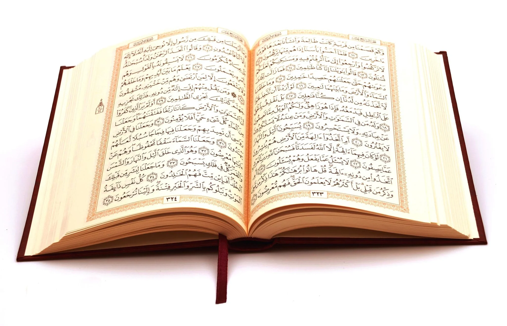

The Noble Quran
The Quran is the holy book of Islam and the final revelation from Allah to humanity. Revealed to Prophet Muhammad (PBUH) over 23 years, the Quran serves as a guide for life, encompassing spiritual, moral, social, and legal principles.

The Noble Quran: The final and preserved word of Allah.
Structure of the Quran
- It consists of 114 Surahs (chapters).
- Each Surah is divided into Ayahs (verses), totaling over 6,000 Ayahs.
- Surahs are classified as Makki (revealed in Makkah) or Madani (revealed in Madinah).
Key Themes of the Quran
- Tawheed: The oneness of Allah.
- Prophethood: Stories of prophets and their messages.
- Day of Judgment: Accountability and life after death.
- Guidance for Life: Ethical living, laws, and morality.
- Miracles of Creation: Signs of Allah's power in the universe.
Important Surahs
- Surah Al-Fatiha: The opening chapter, recited in every prayer.
- Surah Al-Baqarah: The longest chapter, covering various aspects of life and law.
- Surah Yaseen: Known as the "heart of the Quran."
- Surah Al-Ikhlas: A concise declaration of Allah's oneness.
Why the Quran is Unique
The Quran is considered a miracle due to its eloquence, preservation, and profound guidance. Unlike previous scriptures, the Quran remains unchanged since its revelation, with millions memorizing it word for word.
"Indeed, it is We who sent down the Quran, and indeed, We will be its guardian." - Surah Al-Hijr (15:9)
Learn and Explore
To explore the Quran with translations and recitations, visit:
- Quran.com - Read and listen to the Quran online.
- Tanzil.net - Accurate Quran text with translations.